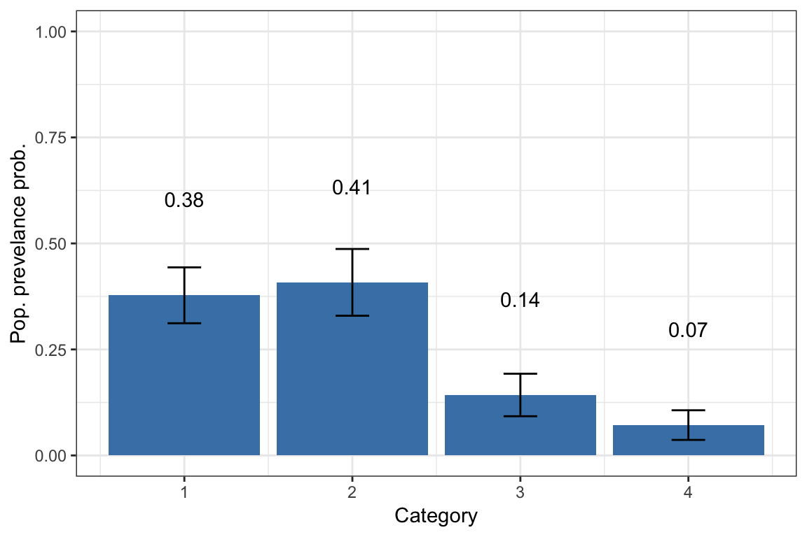
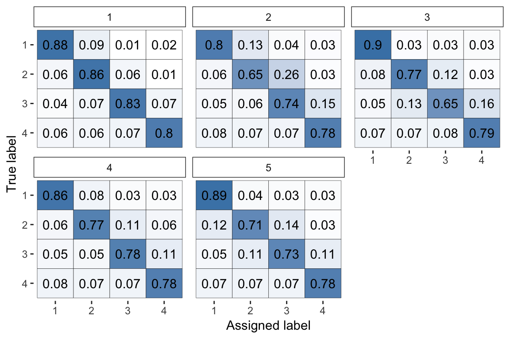
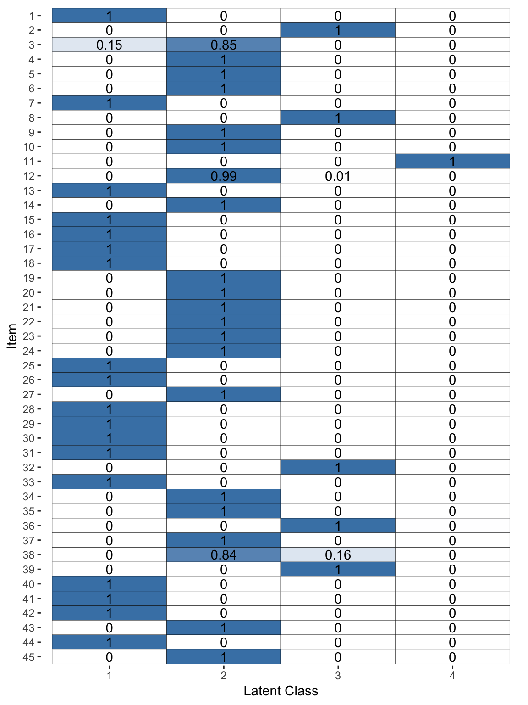

workflow.RmdThe rater package is designed to allow easy fitting and anlaysis of Bayesian models of categorical data annoration through Stan. In this vignette we demonstrate the basic workflow for using the package.
In this vignette we will use the the anesthesia data set taken from the paper Maximum Likelihood Estimation of Observer Error-Rates Using the EM Algorithm by A. P. Dawid and A. M. Skene, the paper which introduces the type of models used in this package. This dataset is already in the appropriate format for use in rater function. For information about how to convert your data into the appropriate format see link
The core function of the rater package is the mcmc function which fits a model given data. The mcmc function has two arguments the first is data which should be in ‘long’ format (add footnote) and model which is the model you would like to fit. Models are passed as a function (why this is will be more obvious in a moment). For example, to fit the basic Dawid and Skene model to the anesthesia dataset we would run:
# load the rater package
library(rater)
# load the anesthesia dataset
data("anesthesia")
# fit the model using MCMC via Stan
fit <- mcmc(anesthesia, dawid_skene(), iter = 500, chains = 1)#>
#> SAMPLING FOR MODEL 'dawid_skene' NOW (CHAIN 1).
#> Chain 1:
#> Chain 1: Gradient evaluation took 0.000408 seconds
#> Chain 1: 1000 transitions using 10 leapfrog steps per transition would take 4.08 seconds.
#> Chain 1: Adjust your expectations accordingly!
#> Chain 1:
#> Chain 1:
#> Chain 1: Iteration: 1 / 500 [ 0%] (Warmup)
#> Chain 1: Iteration: 50 / 500 [ 10%] (Warmup)
#> Chain 1: Iteration: 100 / 500 [ 20%] (Warmup)
#> Chain 1: Iteration: 150 / 500 [ 30%] (Warmup)
#> Chain 1: Iteration: 200 / 500 [ 40%] (Warmup)
#> Chain 1: Iteration: 250 / 500 [ 50%] (Warmup)
#> Chain 1: Iteration: 251 / 500 [ 50%] (Sampling)
#> Chain 1: Iteration: 300 / 500 [ 60%] (Sampling)
#> Chain 1: Iteration: 350 / 500 [ 70%] (Sampling)
#> Chain 1: Iteration: 400 / 500 [ 80%] (Sampling)
#> Chain 1: Iteration: 450 / 500 [ 90%] (Sampling)
#> Chain 1: Iteration: 500 / 500 [100%] (Sampling)
#> Chain 1:
#> Chain 1: Elapsed Time: 1.1788 seconds (Warm-up)
#> Chain 1: 0.902533 seconds (Sampling)
#> Chain 1: 2.08133 seconds (Total)
#> Chain 1:You will see the normal progress output you get whenever Stan is sampling. Note that, as all models are compiled when the package is installed, you will never have to wait for model to be compiled while using the rater package.
Important note: in the example above we manually tell Stan to only run 1 chain with 500 iterations in order to speed up the creation of the vignette and descrese the volumen of output. In general please run mcmc using the Stan sampling defaults which are used if you only pass data and model arguments to mcmc i.e.
Having fit the Dawid and Skene model to the data we can now plot and extract key parameter estimates from the model.
To plot the population prevalence estimates (in the model: \(\pi\)) we run:

To plot the probability confusion matrices of the raters (in the model: \(\theta\)):

And to plot the latent class estimates (\(z\)) we run:

For discussion of what these parameters of the model represnet please see the vigneete models